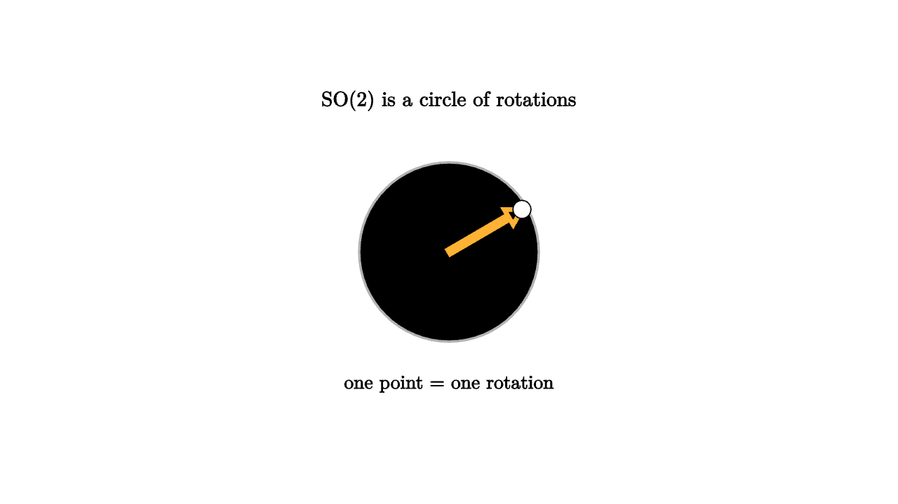

Continuous Symmetry and the Shape of Motion
A finite symmetry group moves an object in distinct jumps. A Lie group moves smoothly. Rotations of the plane form a circle of possible transformations. Rotations of space form a three-dimensional curved space of transformations. Rigid motions combine rotation and translation. These are groups because transformations compose and invert, and they are manifolds because their parameters vary continuously.
The simplest example is SO(2), the group of plane rotations. Each element is a rotation angle. Compose two rotations by adding angles. The identity is angle 0. The inverse of angle theta is -theta. As a space, SO(2) is a circle, since angles differing by a full turn are the same rotation.

source
mesh scene = [
center{1.35u} Text("SO(2) is a circle of rotations", 0.66),
stroke{LIGHT_GRAY, 2} Circle(0.8),
stroke{ORANGE, 4} Arrow([0, 0, 0], [0.65, 0.38, 0]),
center{[0.65, 0.38, 0]} fill{WHITE} Circle(0.08),
center{1.18d} Text("one point = one rotation", 0.62)
]The Lie algebra is the tangent space at the identity. For SO(2), it is one-dimensional: the infinitesimal direction of turning. Exponentiation takes a small generator and follows it into the group. In matrix terms, a skew-symmetric matrix exponentiates to a rotation matrix. Geometrically, an infinitesimal velocity integrates into finite motion.
source
let Wheel = |theta, col| [
stroke{LIGHT_GRAY, 2} Circle(0.78),
stroke{col, 4} Arrow([0, 0, 0], [0.72 * cos(theta * TAU), 0.72 * sin(theta * TAU), 0])
]
"Infinitesimal"
mesh title = center{1.35u} Text("exponentiate a tiny turn", 0.66)
mesh wheel = Wheel(0.15, BLUE)
mesh caption = center{1.18d} Text("Lie algebra velocity flows into group motion", 0.62)
play Fade(0.7)
play Write(0.7)
"Flow"
wheel = Wheel(1, ORANGE)
play Lerp(1.3)Why care? Many modern systems estimate motion. A phone fuses gyroscope and camera data to infer orientation. A robot arm plans in a configuration space built from rotations and translations. A graphics engine interpolates poses. A SLAM system optimizes camera positions. These problems live on Lie groups, not flat Euclidean spaces.
Treating rotations as ordinary vectors can cause trouble. Angles wrap. Three-dimensional rotations have singular parameterizations. Matrices carry constraints like orthogonality and determinant one. Lie theory supplies a disciplined alternative: update in the Lie algebra, map back to the group, and preserve the geometric constraints.
For rigid motion in 3D, the group SE(3) combines SO(3) rotations with translations. Its Lie algebra stores angular and linear velocity together as a twist. This is the language of screw motion: a rigid body can rotate and translate along an axis at the same time. Robotics uses this to model joints and end-effector motion.
The conceptual gain is large. A Lie group is both a space of states and a space of transformations. Its algebra gives local coordinates for small updates. The group law tells how motions compose globally. Modern geometry needs both because the world changes smoothly, but composition remains nonlinear.
Continuous symmetry turns motion into a structured object. Once that structure is visible, algorithms can respect it instead of fighting it.